Iniciais LM desenhadas como um símbolo, com o nome em versal fina embaixo. É o mais "clínica premium": funciona em placa, carimbo e selo redondo.
A vírgula entra no traço do monograma.
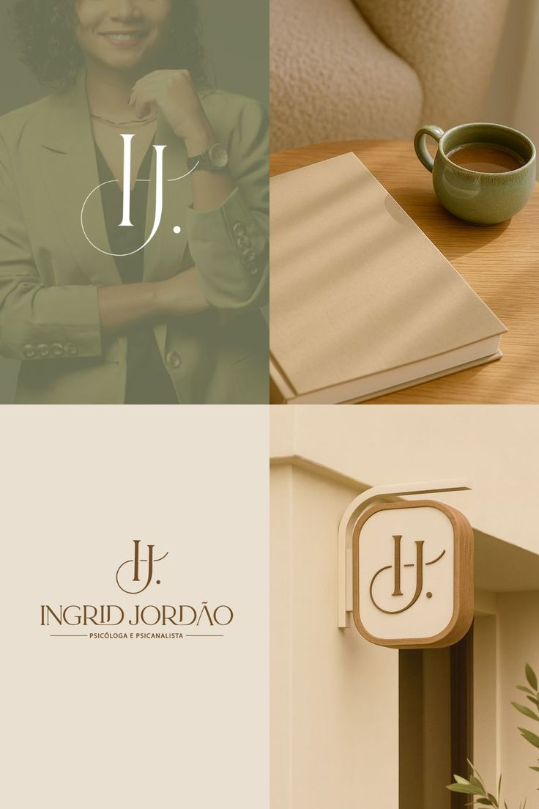
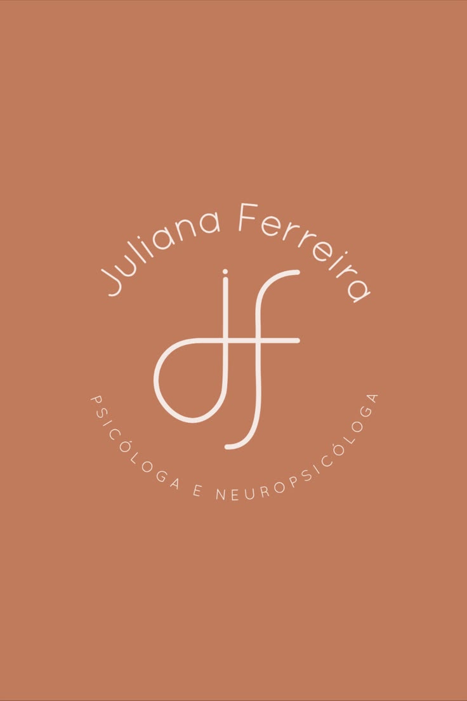
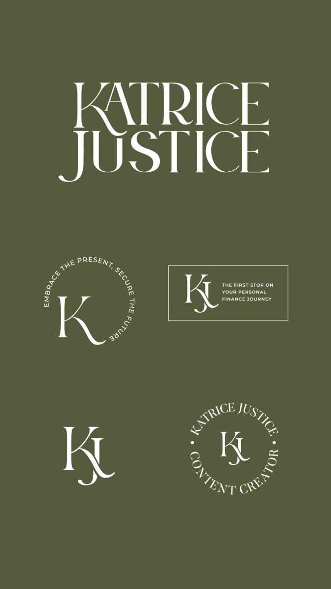
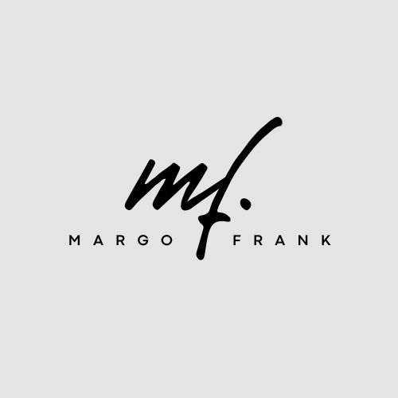
Lia escrito à mão, como uma assinatura, e MORAES em serifa espaçada. É o mais pessoal e delicado, de quem atende olho no olho.
O traço da assinatura termina numa vírgula.
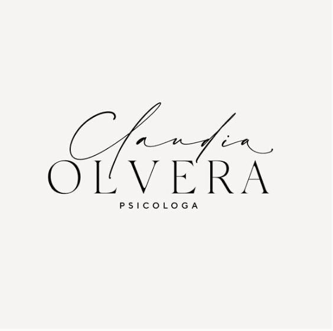
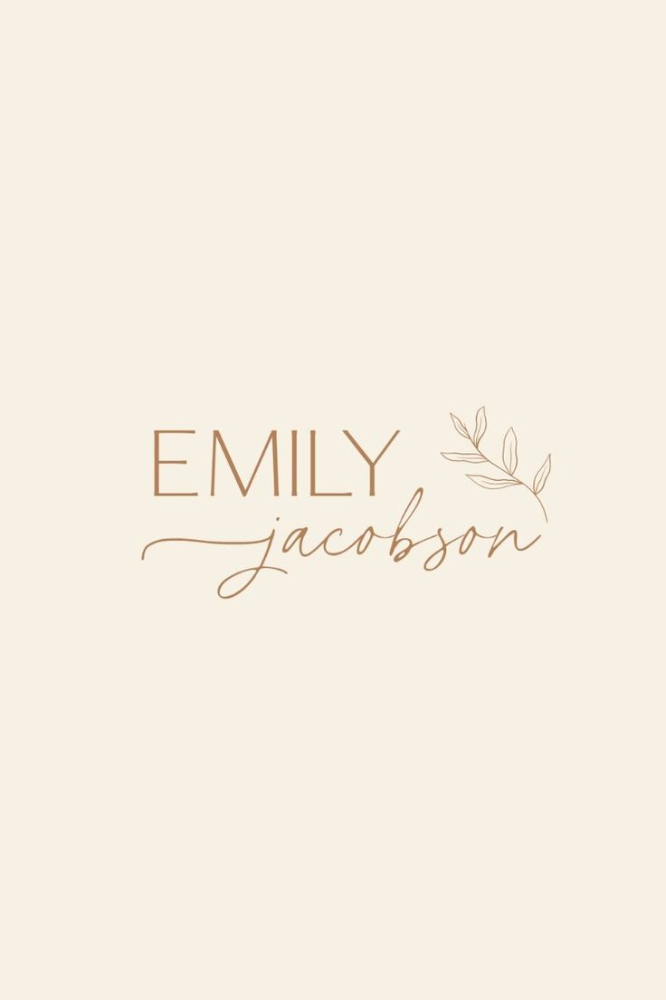
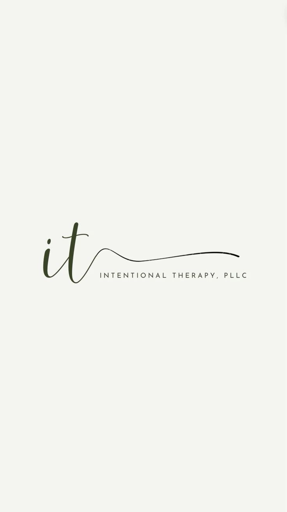
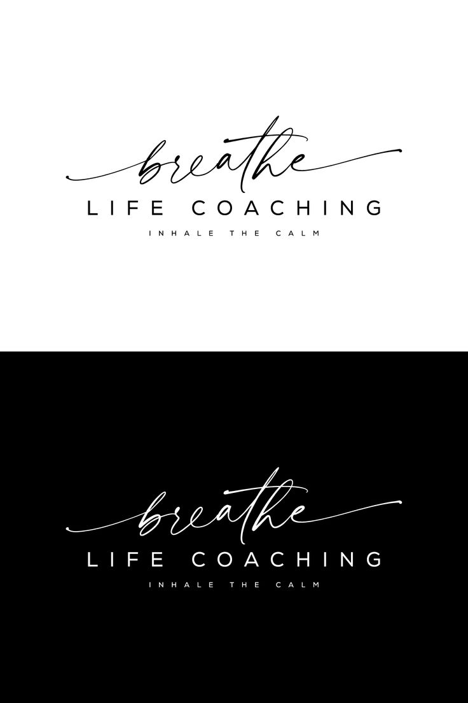
Nome em serifa de revista, minúsculo, terminando numa vírgula (como o ponto do "Vella." e do "bond."): lia moraes, e pronto. É o mais atual e o que mais conversa com os posts das suas refs.
A vírgula diz "a história continua".
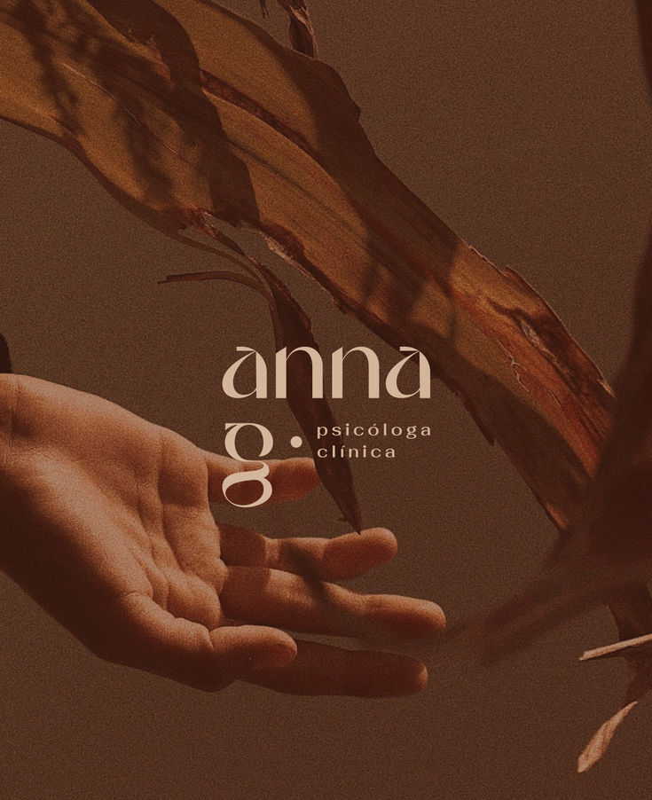
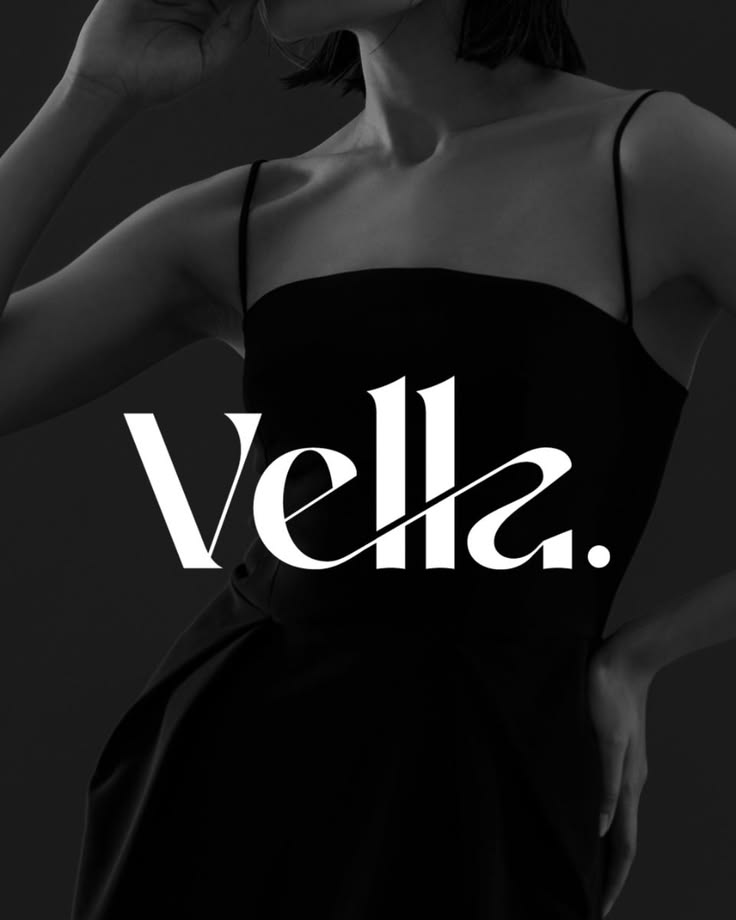
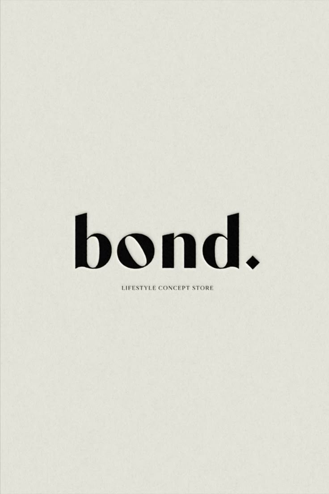
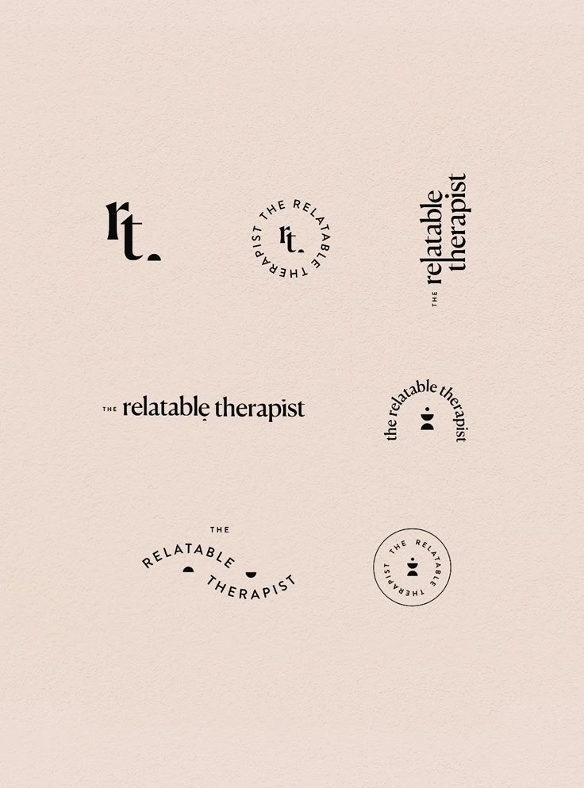